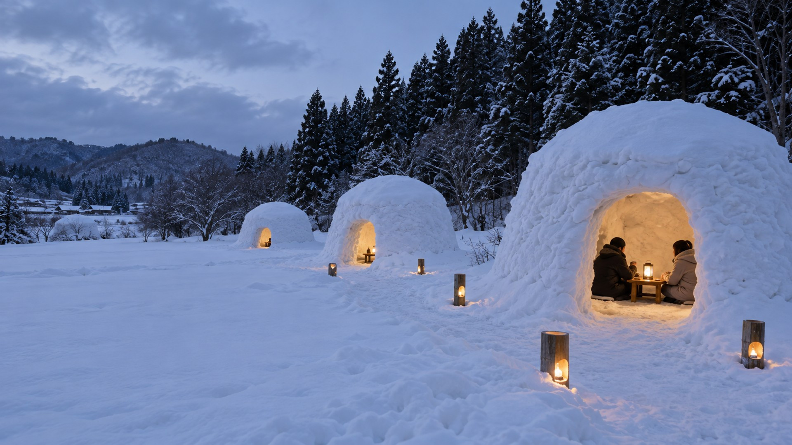
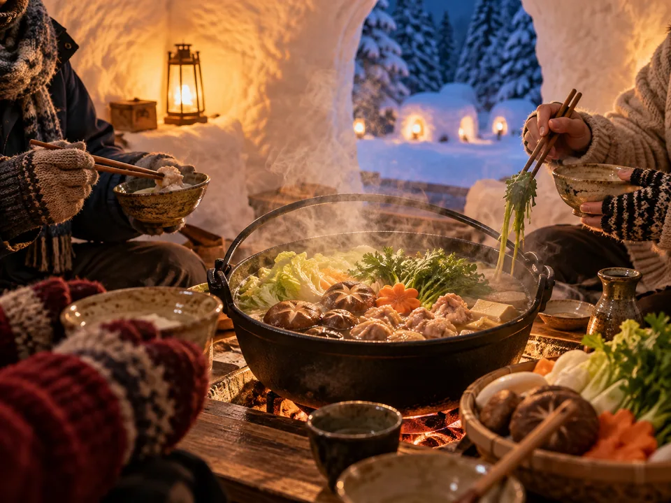
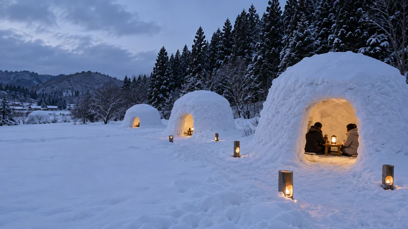
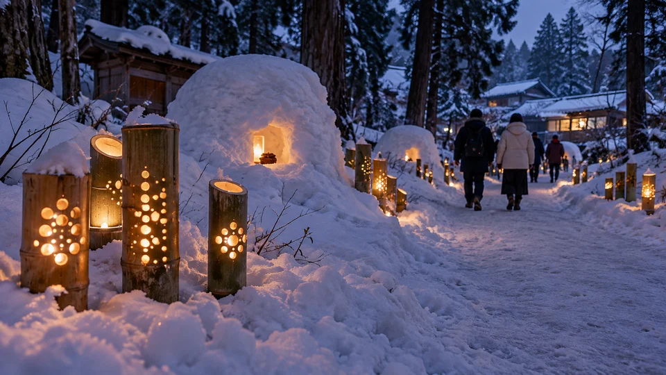

家族や友人と1組で
ほかのグループと相席にならず、会話や食事を楽しむ貸切プランを予定しています。

掲載画像は生成したイメージです
雪の壁に囲まれた中で、テーブルを囲んで過ごす。
家族や友人と利用する、時間貸しのかまくらを準備しています。

1棟あたりの利用人数
最大4名予定
テーブルを囲んで座る使い方を想定しています。
お子さまも定員に含む予定です。
人数は企画段階の想定です。実寸や席の配置を確認してから、正式な定員を決定します。
ほかのグループと相席にならず、会話や食事を楽しむ貸切プランを予定しています。
鍋セットは予約時に追加する予定です。食事なしで利用できるプランも準備しています。
夕暮れ以降は、かまくらのまわりの雪道に竹ランタンが灯る景色を予定しています。
かまくらでの食事、外での雪あそび、夕暮れのランタン。
ご希望に合わせて楽しめる体験を準備しています。
各体験・料理・道具の写真および切り抜き画像は、生成したイメージです。提供内容は決まり次第ご案内します。
夕暮れ以降、竹にあけた模様から灯りがこぼれ、
かまくらのまわりの雪道を照らす予定です。
昼間の雪あそびとは違う景色を、写真にも。
夕暮れ以降に点灯予定
点灯日・時間・見学条件は、決まり次第ご案内します。掲載画像は生成したイメージです
かまくらの利用時間を選び、
食事や道具を必要に応じて追加するプランです。
予定プラン 以下の料金・定員・利用条件は検討中の内容です。確定後に改めてご案内します。

かまくら1棟を貸切で利用（予定）かまくらでの休憩や雪あそびに。食事なしでの利用も可能な予定です。
受付開始後は、予約サイトで日時を選べます。
メニュー・アレルギー対応・道具の内容は、確定後にご案内します。写真はすべてイメージです。
15時から17時まで利用する場合の一例です。
受付を済ませて、利用するかまくらへ。
そり遊びや雪だるまづくり、記念撮影。
鍋セットをご注文の場合は、かまくらで食事。
点灯後は、ランタンと雪景色を見学。17時に利用終了。
過ごし方・時刻は一例です。実際の営業・点灯・食事提供時間は未定です。受付は開始15分前を目安とする予定です。
日付・開始時刻・利用時間・
参加人数を選択。
お鍋や雪あそび、
必要なオプションを選択。
連絡先などを入力し、
完了メールを受け取ってご来場。
受付開始日・開催日・営業時間が決まり次第、本ページでご案内します。
予約受付開始後は、外部予約サイトでお手続きいただきます。お支払い方法・変更・キャンセル条件は、予約ページにてご確認ください。
〒967-0014
福島県南会津郡南会津町糸沢字西沢山3692-20

駐車場・受付場所・冬季の来場方法は、
詳細が決まり次第ご案内します。
雪や氷で滑りやすい場所があります。お子さまは保護者の方と一緒にお楽しみください。積雪・天候によって、内容の変更や中止となる場合があります。
1棟につき1組・最大4名で、60分または120分のご利用を予定しています。お子さまも定員に含む予定です。正式な定員・時間枠は、確定後にご案内します。
かまくらのみのご利用もできる予定です。鍋セットやドリンクなどは、ご希望に応じて予約時に追加できるプランを準備しています。
2人分から、ご利用人数分までの受付を予定しています。120分プランでのご利用・前日17時までのご注文を検討しています。メニューやアレルギー対応を含む正式な条件は、確定後にご案内します。
クレジットカード事前決済・現地払いの選択に対応する予約方法を検討中です。実際に利用できるお支払い方法は、予約受付開始時にご案内します。
夕暮れ以降の点灯を予定しています。点灯日・時間・見学条件は、確定後に本ページでお知らせします。天候により点灯内容が変わる場合があります。
積雪・天候により、内容を変更・中止する場合があります。開催状況と、ご予約済みの方へのご案内方法は、本ページ・予約ページでお知らせします。振替・返金等の条件は予約受付開始時にご確認ください。
変更・キャンセルの方法、期限、料金は現在準備中です。予約受付開始後、予約ページのキャンセルポリシーでご案内します。
入場料・駐車料金・見学のみのご利用については、確定後に本ページでお知らせします。
防寒着、手袋、帽子、防水性のある靴をご用意ください。雪あそびをされる方は、着替えもあると安心です。受付は開始15分前を目安とする予定です。受付場所・到着時間は予約受付開始時にご案内します。
掲載画像は生成したイメージです